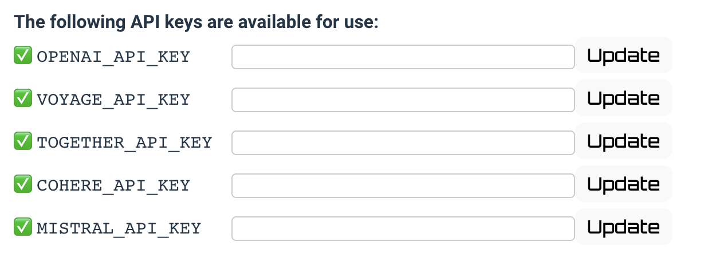

Install and Configure
To process your own data you'll need to install the python module and run it. It's recommended to create a folder where the library can store it's data. This is also a convenient place to make a virtual environment.
Latent Scope works on Mac, Linux and Windows. Python 3.12 is the recommended python version.
# make a directory for your data to live
mkdir ~/latent-scope-data
cd ~/latent-scope-data
# create & activate virtual environment
python -m venv lsenv
source lsenv/bin/activate
# install the module
pip install latentscope
# run the module, specifying the data directory and optionally a port to run on
ls-serve ~/latent-scope-data --port 5001
This will start a local webserver from which you can access the tool at http://localhost:5001
The next time you want to run Latent Scope you can simply do:
cd ~/latent-scope-data
ls-serve
Configure
There are a few settings Latent Scope uses to run, they are stored in a .env file where you run ls-serve so if you followed the above example you could look in
~/latent-scope-data/.env
You can also see the settings in the web UI at http://localhost:5001/settings
Third Party API keys
You may want to use third party APIs like OpenAI to run parts of the latent scope process. You can do so by setting the API keys in http://localhost:5001/settings
or by manually adding them to .env:
OPENAI_API_KEY=XXX
TOGETHER_API_KEY=XXX
MISTRAL_API_KEY=XXX
VOYAGE_API_KEY=XXX
COHERE_API_KEY=XXX